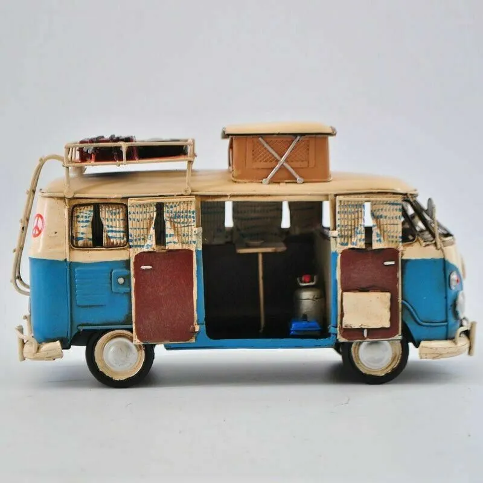
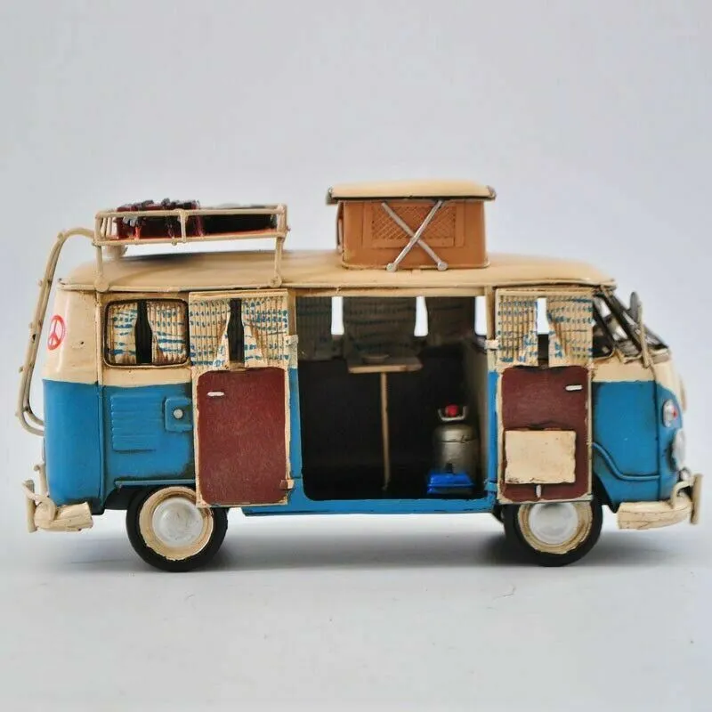

Camper Van
Camper Van was crafted using Maya for 3D modeling and Substance Painter for texturing. The final composition was achieved by blending elements in Unreal Engine 5.
Demo Reel Breakdown
Wireframe and Ambient occlusion
The transition from the modeling and texturing phases to the composition stage brought forth challenges in achieving the desired visual cohesion. Integrating elements seamlessly in a 3D space, optimizing the scene for performance, and ensuring a visually appealing final result were areas that required careful consideration and problem-solving.


Process Shots in Unreal Engine 5
Despite these challenges, the process served as a valuable learning opportunity. I learned more about Unreal Engine 5 and the wonderful functions you can do within the software.


Inspiration and Reference
The idea for this project sparked when I came across a camper van at Myrtle Beach, a local spot in South Carolina. Inspired by its unique design, I wanted to challenge myself to capture the essence of that van.
Camper Van from Myrtle Beach
 
